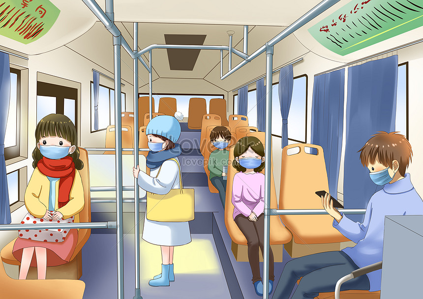

Mission of the site
This project aims to help all citizens who are in need of public transportation.
Help them to prevent one of the main problems with the transportation that they face in their
everyday lives. Help them to see where their troilebuses are coming. But this site is aiming not only show where the troilebuses are coming, but it shows buses and mini-buses as well. Moreover, this site will help passengers to schedule their time wthout going too early or too late, but on time by traking their transportations from this site. The public bus-stops are also going to be normalized when the people somehow know where their bus is coming and will stay aside the street. But one the main thing that drives this project is that passengers responsibility and will to give and get helps from each other by showing point on the map.
How does it work
Step 1
Whenever you get into the Mini-bus if you want to help people to see the current transportation you just login into the site using your username and password inorder to make a point on the map that is seen for everyone.

Step 2
By Entering the site you have to push the single button on the googple maps on the very bottom of the map.
Step 3
Tracking bus by this site you can approximate the coming time and be on time on a bus-stop.